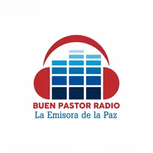
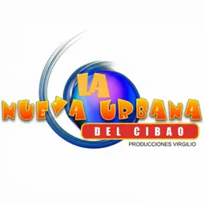
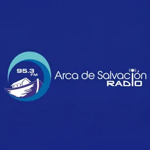
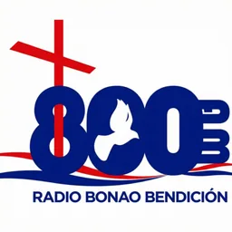
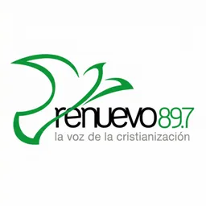
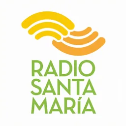
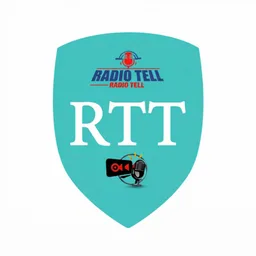

Hub · Género
Radios de cristiana y gospel
60 emisoras en vivo en VivoRD
La radio cristiana y gospel en República Dominicana incluye emisoras comerciales, comunitarias y señales de ministerios con programación de fe, música worship y espacios de enseñanza. Entran en este hub las fichas cuyo nombre o descripción mencionan términos cristianos, evangelísticos, bíblicos o equivalentes verificables.
Respetamos la diversidad denominacional sin clasificar más allá del texto disponible. No etiquetamos una emisora cristiana si el catálogo no lo indica. El listado abarca Santo Domingo, Santiago y ciudades con fuerte presencia de congregaciones y estaciones locales de fe.
Cada emisora enlazada tiene stream comprobado y descripción editorial. Usa el reproductor web integrado en cada ficha.
Para contexto general sobre radio dominicana online, consulta las guías relacionadas. La programación cristiana convive en el dial con formatos seculares; explora otros hubs de género si buscas comparar.
Algunas emisoras incluyen en su descripción horarios de culto o bloques de enseñanza; esa información aparece en la ficha cuando forma parte del texto fuente que importamos.
Domingo por la mañana concentra buena parte de la audiencia cristiana en FM; este hub te permite saltar entre señales sin buscar manualmente en todo el catálogo nacional.
Emisoras















